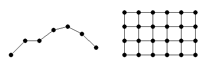
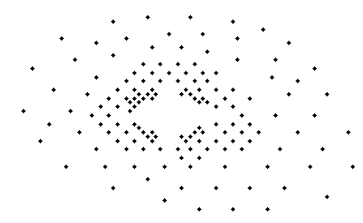
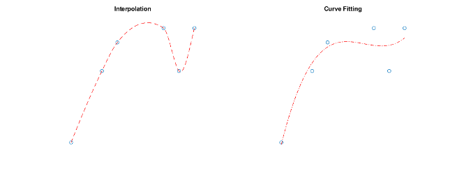
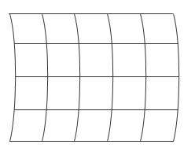
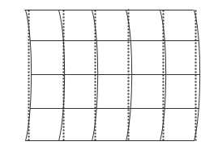

Gridded and Scattered Sample Data
Interpolation is a method to estimate the value of a function at a query location that lies within the domain of a set of sample data points. The function value is calculated based on the sample data points that are closest to the query point. MATLAB® can perform two kinds of interpolation depending on the structure of the sample data. The sample data can form a grid, or can be scattered.
Gridded sample data makes interpolation more efficient, because the organized structure of the data makes it easy for MATLAB to find the sample data points closest to the query point. However, interpolating scattered data requires a Delaunay Triangulation of the data points, and this introduces an extra layer of computation. Therefore, if your data can be approximated as a grid, gridded interpolation provides substantial savings in computation time and memory usage compared to scattered interpolation.
The two approaches to interpolation are covered in the following topics:
Interpolating Gridded Data covers 1-D interpolation, and the N-D interpolation of sample data that is in axis-aligned grid format:

Interpolating Scattered Data covers the N-D interpolation of scattered data:

Interpolation versus Curve Fitting
The interpolation methods available in MATLAB create interpolating functions that pass through the sample data points. That is, if you query the interpolation function at a sample location, you get back the exact sample data value and not an approximation. By contrast, curve and surface fitting algorithms do not necessarily pass through the sample data points. For more information about curve fitting, see Curve Fitting Toolbox.

Grid Approximation Techniques
In some cases, you may need to approximate a grid for your data. For example, a grid can have points that lie along curved lines. A data set like this might occur if your data is longitude and latitude based:

With a curved grid, you are effectively dealing with a set of scattered data and must use more computationally expensive scattered interpolation functions to interpolate the values. However, although the input data cannot be gridded directly, it is sometimes feasible to approximate the curved grid with straight grid lines at appropriate intervals:

You can create an approximate grid by creating a set of grid vectors with appropriate spacing. Approximating a curved grid with straight lines allows you to get the performance benefits of grid-based interpolation, at the cost of slightly distorting the data. For more information about creating grid vectors, see Grid Representations.
See Also
griddedInterpolant | scatteredInterpolant